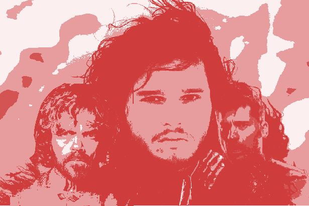

Chris Vela | Jul 24th
Chris Vela | Jul 24th
Will Jon Snow Die Again?
Using past season deaths to see who has a higher chance dying in season 7 of Game of Thrones.
A couple months ago, my girlfriend finally convinced me (after much persistence from her) to watch Game of Thrones. I hesitated because I hate watching shows that I know will take a long time to watch (reason why I never have watched Breaking Bad or The Walking Dead). But after binge watching this show at beginning of the summer, I have become like the masses of y'all.
But more to the point, my cousin last week told me about a betting pool him and his co-workers were having on the odds that a GOT character will die. Not only that, The Ringer recently put out a GOT Mortality Pool to play with friends, and recently talked about how Vegas is getting in on the action of betting on GOT characters. This got me thinking, what if I could find data sources that could maybe give us insight on a trend of deaths in the show. Essentially could there be an unconscious but pattern-based reason George RR Martin kills off his characters?
Well ladies and sers, free-folk and white walkers: Here is that model and a little insight on how we got the data to achieve this feat even the maesters in the Citadel would put under lock and key in the restricted area.
A quick run-through of our data sources:
Below you see how this data looks in my Google Sheet:
Initially, I didn't know which model to produce, so I decided to try a couple out until a random forest model seemed after cross validation to have a good predictive value to helping us predict death. Below are the variables used to make this:
Here is the accuracies between our three models, a random forest, a support vector machine, and a GBM stacking of these two models. I took out variables that were highly correlated from these models.
| Model | Accuracy |
|---|---|
| GBM Stacking Model | 72.5% |
| SVM Model | 60% |
| Random Forest Model | 72.5% |
The model fitted quite well to the training set, which good be cause for overfitting, but we look at our training set, it is correctly matching death/alive almost 73% of the time. The probabilities below are the random forest probabilities for death. As the season rolls through, I will be updating the model to help us figure out potential new locations that were not in the dataset. Another consideration is that this is only half of the characters trained in the model, but I wouldn't be too woried about that since we included all the main characters from the previous seven seasons. I feel good about this model too, because *SPOILER* Ellaria Sand gets abducted by Euron Greyjoy on the previous episode, and she currently has the highest probability of death at 85%.
Now I will be updating this data and probabilities weekly after the show on Sundays, so be sure to check out this page to make bets on the upcoming GOT episodes.
If you want to run the model or mess with the data, all the code and files are available for you to fork on my github repo.